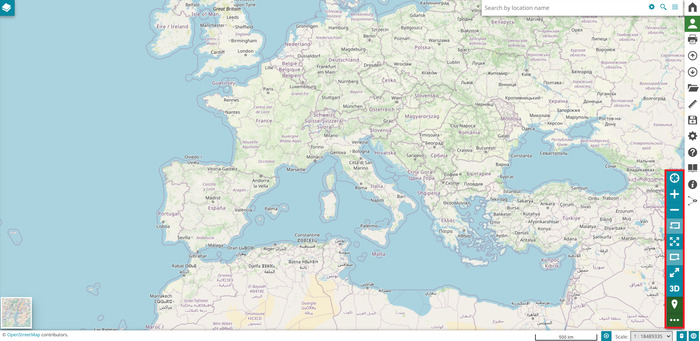
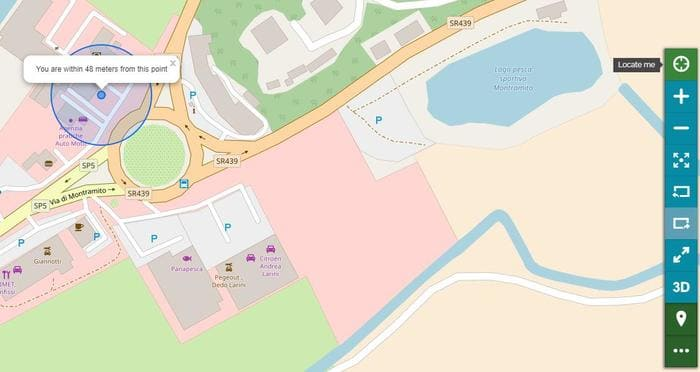
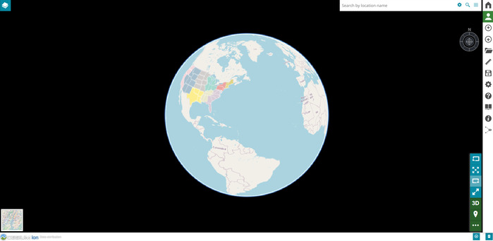
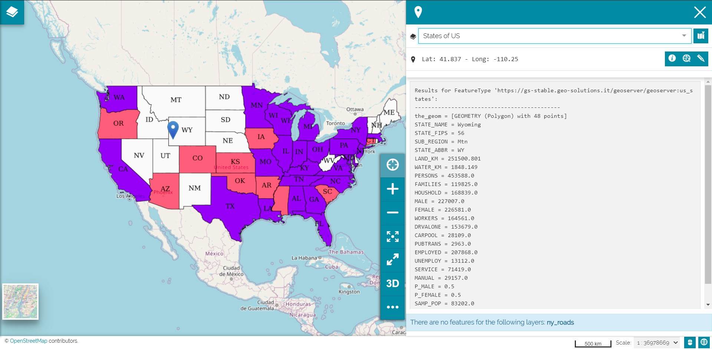
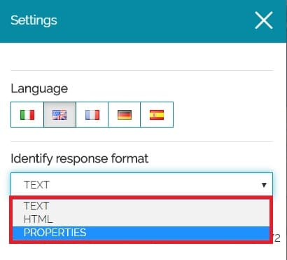
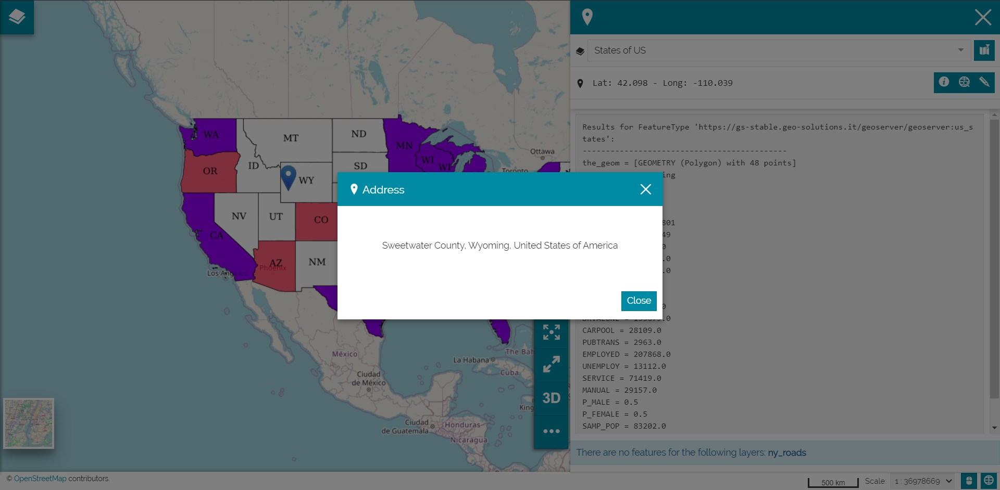
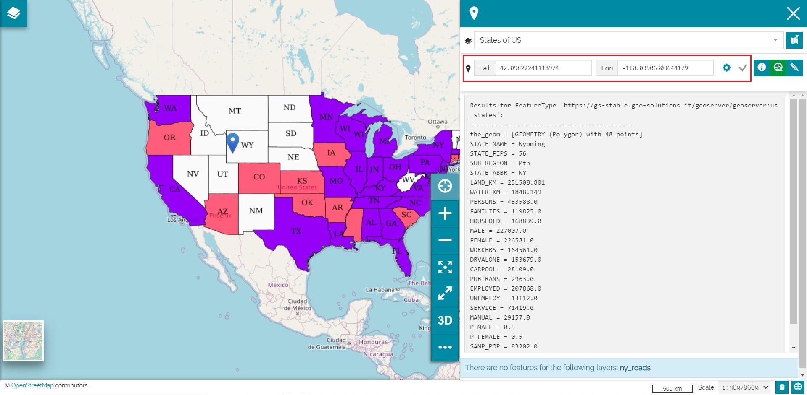
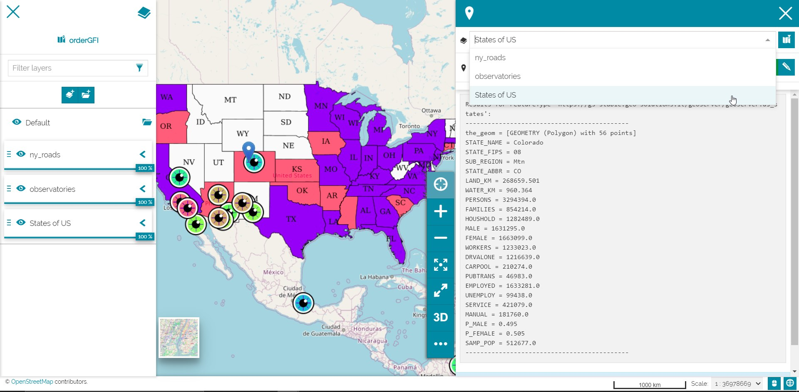
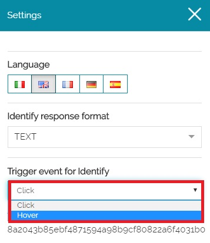

Navigation Toolbar
The Navigation Toolbar is a navigation panel containing various elements that help the user to explore the map. In particular, it is possible zooming, changing the extent, navigating in 3D mode and querying objects on the map. Moreover, the following icon is used to expand/collapse the navigation toolbar.

Geolocation tool
Through the Show my position the user can center the map on his position. Therefore the button turns green.

The position is still active even when the user interacts with the map; with a single click on the button it is possible re-center the map on his position. To disable the position the button needs to be duble clicked.
Zooming tools
MapStore provides several tools allows the user to:
-
Increase the map zoom by using the zoom in icon
-
Decrease the map zoom by using the zoom out icon
-
Switch to full screen view
-
Go back to the previous map extent in the map navigation history
-
Go forward to the next map extent in the map navigation history
-
Zoom to the maximum extent the map
3D Navigation
The 3D navigation in MapStore is based on CesiumJS. If the 3D button  in the Navigation Toolbar is clicked, the map switch in 3D mode so map contents are displayed on a 3D globe and it is possible to orbit around it through the compass place in the upper right corner of the map.
in the Navigation Toolbar is clicked, the map switch in 3D mode so map contents are displayed on a 3D globe and it is possible to orbit around it through the compass place in the upper right corner of the map.

Note
The 3D mode in MapStore support also the rendering 3D Tiles layers once they are added through the Catalog tool as explained here.
Identify Tool
The Identify tool allows to retrieve information about layers on the map. The tool is active by default (the button is green). Therefore if the user click on a layer in the map, the identify panel opens containing the layers information corresponding to the clicked point in the map (also the coordinates of the clicked point are reported in the identify panel).

The layers information are reported in plain text by default. It is possible to change the format by selecting the  button in Side Toolbar where the user can select, through the Identify response format menu, three different formats like: TEXT, HTML and PROPERTIES.
button in Side Toolbar where the user can select, through the Identify response format menu, three different formats like: TEXT, HTML and PROPERTIES.

The information will be returned in the format chosen by the user. For exaple with PROPERTIES format as follows:
Warning
This global settings could be overwritten by a layer-specific configuration (see Feature Info Form).
In addition to the layers information, the following are provided by the Identify Tool:
- The point address through the More Info button

- The coordinates of the point

Note
The point coordinates are visualized in decimal or areonautical format. It is possible to change the format by the setting button
- The Highlight Features button allows to highlights on the map the layers features corresponding to the retrieved information in the clicked point.
- The Edit button
 allows the user to open the Attribute Table in edit mode showing only layers records corresponding to the clicked point on the map.
allows the user to open the Attribute Table in edit mode showing only layers records corresponding to the clicked point on the map.
Using the Coordinates Editor
In order to Identify layers features by typing coordinates instead of clicking on the map, you can use the Coordinate Editor.
The coordinates can be in decimal or areonautical format depending on the user needs. It is possible to change the format by the setting button
An example of search with Decimal coordinates as follows:
An example of search with Aeronautical coordinates as follows:
Identify Tool with more than one layer
In a map it is possible to have several overlapping layers. With the Identify tool the user can retrieve information on one or more overlapping layers at the same time in a certain point.
If the user clicks on the map where one or more overlapping layers are present, the identify panel opens. The panel provides the layers information, therefore the user can navigate different layers information from the layer select drop-down menu where the layer options have been sorted as in TOC.

In order to have information about one layer only the user can select the layer on the Table of Contents, through the TOC button  , and then click on the layer in the map to perform the identify operation only for that selected layer in TOC. The identify panel opens containing the layer information corresponding to the clicked point in the map, as follows:
, and then click on the layer in the map to perform the identify operation only for that selected layer in TOC. The identify panel opens containing the layer information corresponding to the clicked point in the map, as follows:
Floating Identify Tool
In MapStore the user can set the Identify tool in floating mode (Floating Identify tool) instead of having the default one available through a click on the map. In that case an identify popup will appears on the map as soon as the user hover over a layer in the map.
In order to activate the Floating Identify Tool the user can select the button in Side Toolbar. Here he can select the Hover option through the Trigger event for Identify dropdown menu.

As soon as the option Hover is selected, the user can hover the mouse over a layer in the map in order to show the popup containing the identify information.